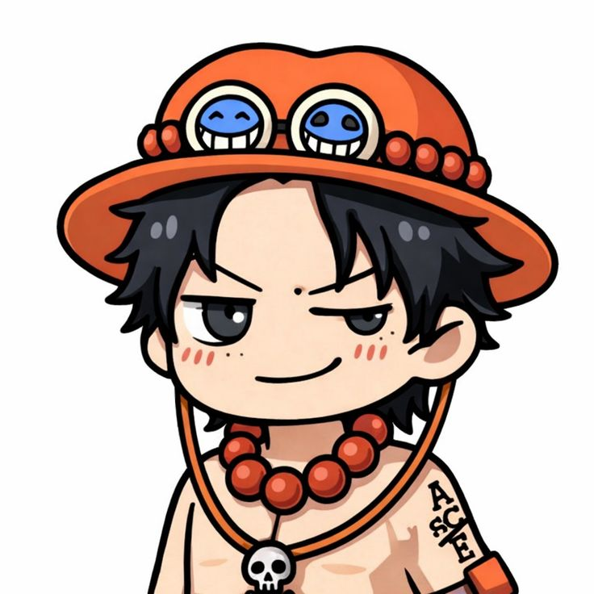
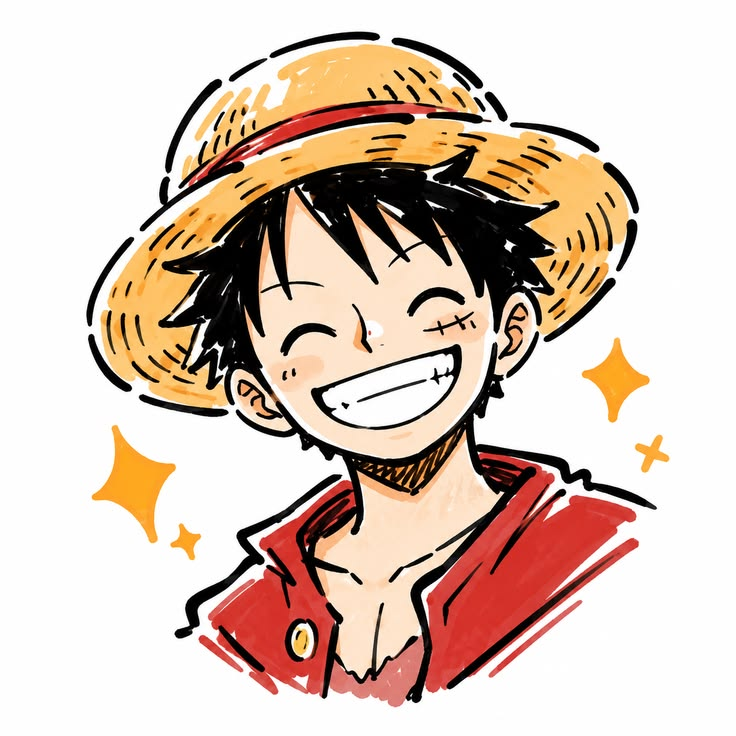
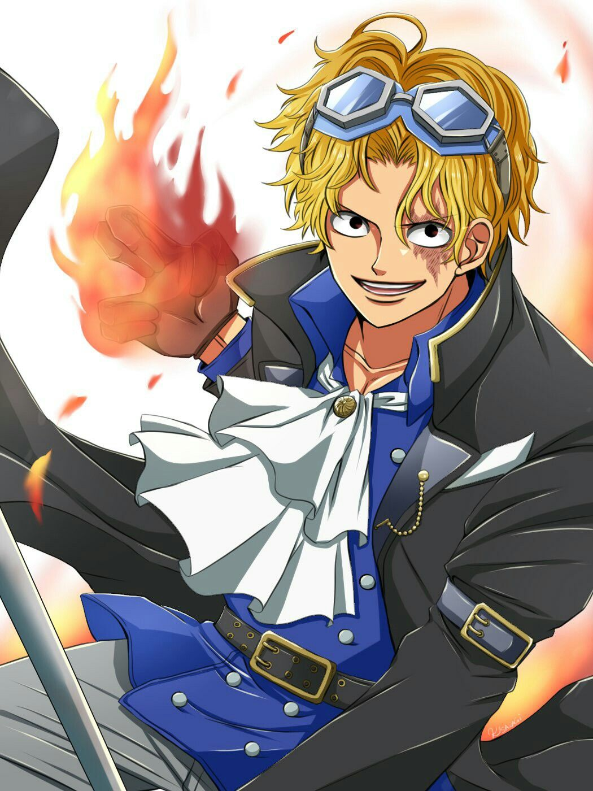
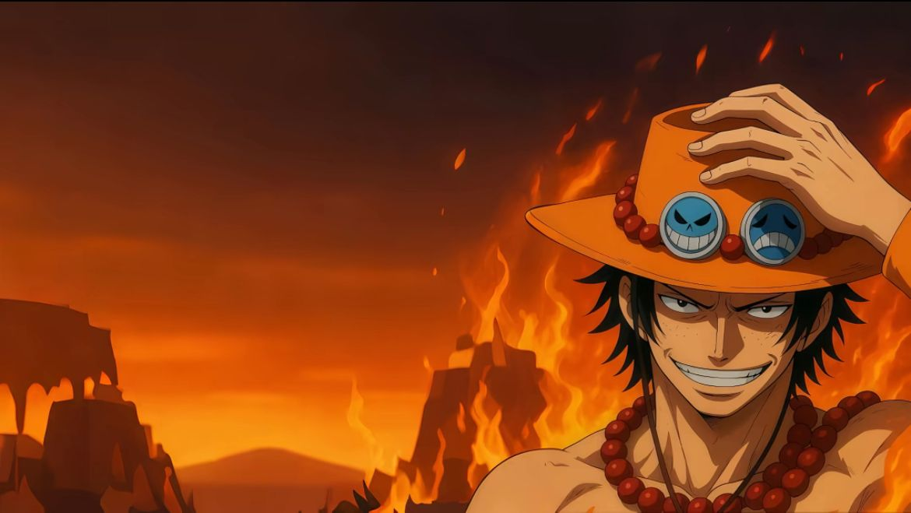
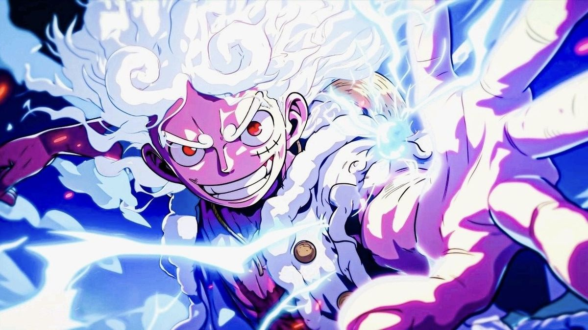
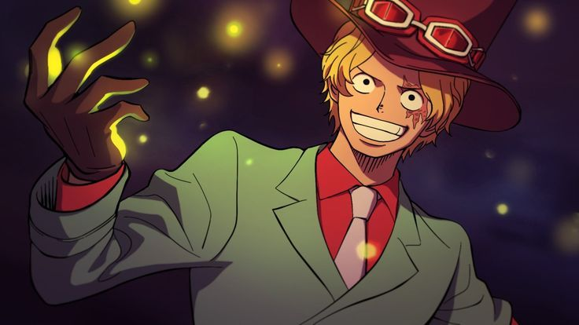

The Three Flames of Freedom

One Piece – Set Sail for the Grand Adventure
Luffy, Sabo, and Ace are the three brothers of the Straw Hat Pirates, each with their own unique abilities and roles within the crew. Their bond is a central theme in the One Piece series, symbolizing their shared dreams and struggles. Luffy, the captain, is known for his strength and leadership, while Sabo, the chief of staff, is a skilled tactician and swordsman. Ace, the former captain, is a powerful swordsman and a key figure in the Revolutionary Army



D.ACE
D.LUFFY
SABO
About The Three Brothers

PORTUGAL D ACE
Portgas D. Ace, a pivotal character in the anime and manga series One Piece, was created by Eiichiro Oda. Ace is not biologically related to Monkey D. Luffy, but they share a strong sibling bond, having grown up together along with their sworn brother, Sabo. Born to Portgas D. Rouge and Gol D. Roger, the legendary Pirate King, Ace’s birth was marked by tragedy; his father was executed before he was born, and his mother kept him in her womb for an additional 15 months to protect him from the World Government’s pursuit. Ace early life was filled with challenges, as he faced hatred and ridicule due to his father’s infamous status. He was eventually taken under the care of Monkey D. Garp and Curly Dadan. This tumultuous beginning shaped his strong sense of justice and his desire for freedom and family...

MONKEY THE LUFFY
Luffy was born on Dawn Island in Foosha Village to Monkey D. Dragon, leader of the Revolutionary Army, and is the grandson of Marine hero Monkey D. Garp. He grew up under Garp’s care, who trained him through extreme challenges to make him stronger, and was also raised by Curly Dadan. Luffy formed a lifelong bond with Portgas D. Ace and Sabo, swearing brotherhood with them. His greatest inspiration came from the pirate Shanks, who saved his life, sacrificed an arm for him, and gave him his iconic straw hat as a symbol of their promise to reunite once Luffy became a great pirate...

SABO FLAME EMPEROR
Sabo is the Chief of Staff of the Revolutionary Army, sworn brother of Luffy and Ace, and the “Flame Emperor” who wields the Mera Mera no Mi. Sabo is a central character in the One Piece series, serving as the No. 2 of the Revolutionary Army under Supreme Commander Monkey D. Dragon, making him one of the most influential figures opposing the World Government . Born into a noble family in the Goa Kingdom, Sabo rejected his privileged upbringing, running away to live freely and eventually meeting his future brothers, Monkey D. Luffy and Portgas D. Ace, forming a close bond During his youth, Sabo attempted to sail away but was attacked by a World Noble, resulting in amnesia. He was rescued by Dragon and joined the Revolutionary Army, dedicating himself to fighting oppression . After regaining his memories following Ace’s death, Sabo inherited Ace’s Devil Fruit, the Mera Mera no Mi, gaining fire-based powers and earning the title “Flame Emperor”